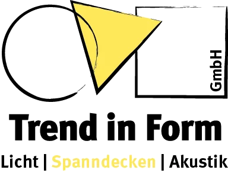

Trend in Form
07248 9273050
Kostenvoranschlag anfragen

Referenzen
07248 9273050
Spanndecke im Bad · Licht · Montage
Deine Baddecke, neu — mit Spots oder
Lichtlinie
.
Raummaß und Lichtwunsch senden — klarer Kostenrahmen und Vor-Ort-Termin.
Kostenvoranschlag fürs Bad anfragen
kostenlos · in 2 Minuten
Vor-Ort-Termin
Montage nach DIN 18168
Brandschutz B-s2, d0
Phthalatfrei & RoHS
★★★★★
Google —
Bewertungen lesen
Badsanierung · Ettlingen
Vorher
Vorher · Nachher
Echte Bäder, echte Ergebnisse —
zieh die Linie
.
{{ c.name }}
Platzhalter — echte Projektfotos folgen
Vorher
Nachher
‹›
Vorher
Nachher
{{ dataLine }}
Alle Referenzen
Kostenvoranschlag fürs Bad anfragen
Danach
Es geht nicht um die Decke.
Es geht um danach.
Licht
Morgens weckt es Dich. Abends fährt es mit Dir runter.
Sauber
Kein Abriss. Kein Staub. Dein Bad bleibt Dein Bad.
Planbar
Der Preis, den Du liest, ist der Preis, den Du zahlst.
Kostenvoranschlag fürs Bad anfragen
Spots oder Lichtlinie?